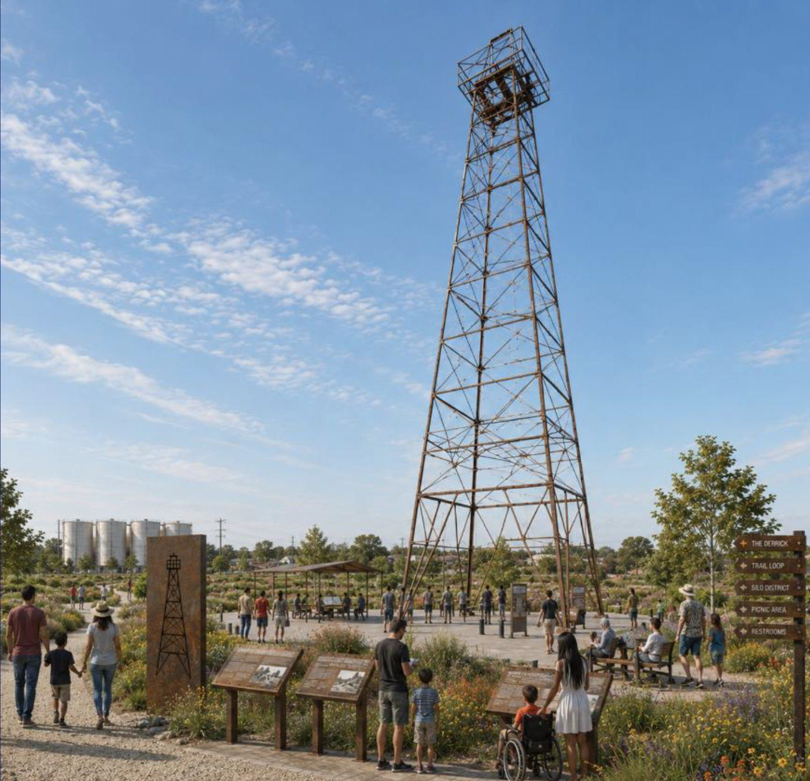

A permanent home for free live music.
Plans are moving forward for a Levitt Pavilion at Willow Waterhole, a lasting outdoor home for the free concerts and community gatherings Levitt Houston is building now.

A place built for the experience.
A permanent pavilion gives Levitt Houston the home to present free live music consistently, welcome larger audiences, support artists and production, and create a recognizable gathering place for Southwest Houston.
See the concerts
Rooted at Willow Waterhole.
The future pavilion is planned on the former Shell Gasmer site beside Willow Waterhole Greenway, building on years of free music and community life already connected to this place.
Learn about Willow WaterholeMoving forward, step by step.
- 2012
Levitt selects Houston
The Levitt Foundation selects Willow Waterhole as the Houston location for a future Levitt venue. MusicFest begins the same year.
- 2016
The city advances the pavilion
Houston City Council approves plans to advance Levitt Pavilion Houston.
- 2019
A new site beside the Greenway
The City of Houston acquires the former Shell Gasmer property, and the future pavilion location later moves there.
- 2026
The site moves forward
Houston City Council approves the sale of the site to the Southwest Houston Redevelopment Authority (TIRZ 20).
- 2027
The concert series begins
Free Levitt concerts begin at Willow Waterhole while site planning, design and fundraising continue.
A community effort with strong partners.
Levitt Houston is advancing through local nonprofit leadership, public partnership, community support and the national Levitt network.
Levitt Foundation
Provides the national Levitt model, experience and ongoing support for free outdoor music.
Southwest Houston Redevelopment Authority (TIRZ 20)
Public property and site development partner for the future venue location.
City of Houston
Public partner helping advance the future pavilion and broader community opportunity.
Brays Oaks Management District
Neighborhood partner supporting the Brays Oaks area around Willow Waterhole.
Willow Waterhole Greenspace Conservancy
Steward of Willow Waterhole Greenway and longtime host of MusicFest.
Interested in leadership support?
Leadership gifts and partnerships connected to the permanent home begin with a conversation. We’d be glad to share current plans and talk about how you can be part of what comes next.